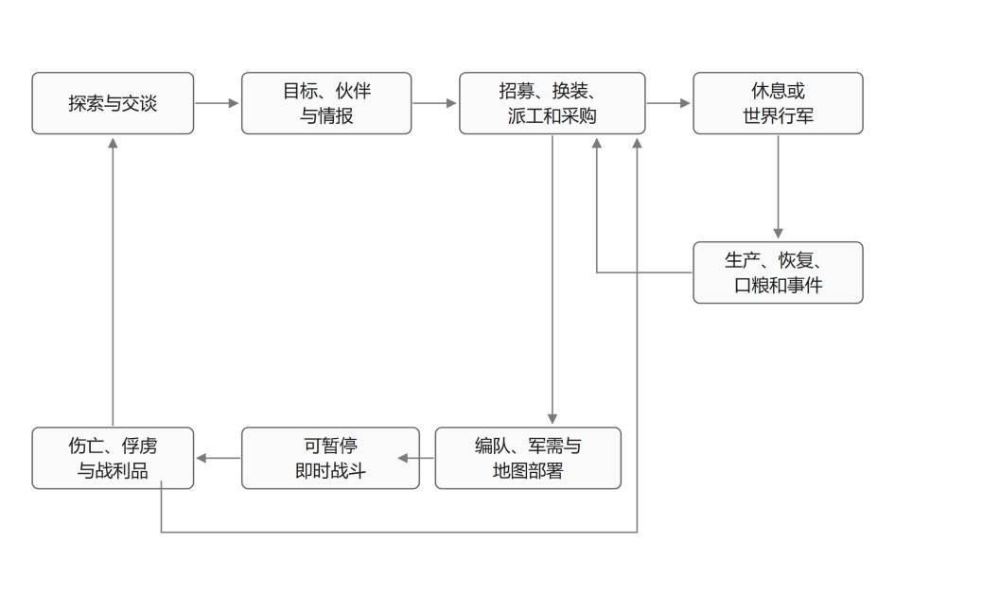
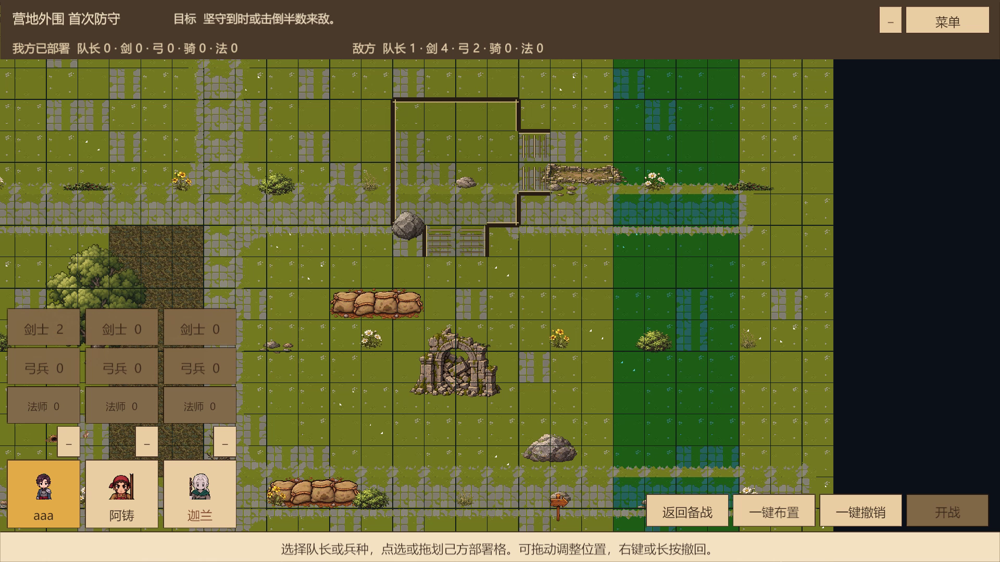
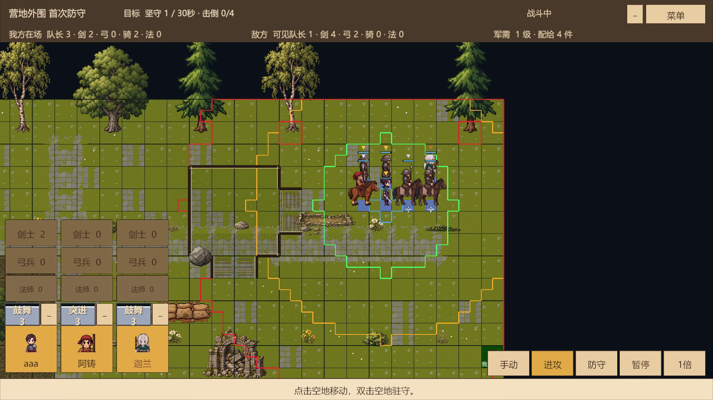
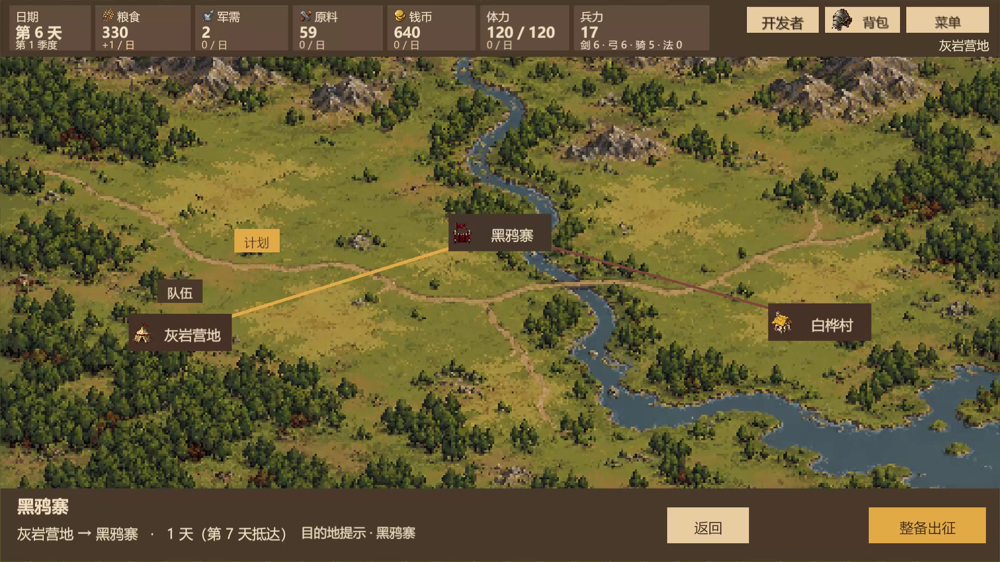
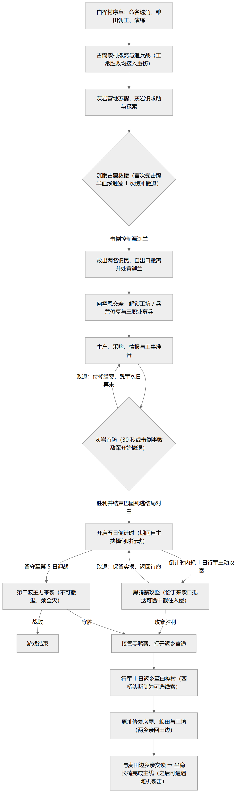

《断剑归途》系统与玩法策划案
运行平台：Windows（键鼠）／Android（横屏触控） ｜ 当前版本：Demo v0.1.0
一、游戏概述与核心玩法
1.1 产品定位与设计目标
《断剑归途》是一款俯视角 2D 像素 RPG，结合按游戏日结算的营地经营与可暂停的即时小队战斗。玩家扮演离开王都、在白桦村隐居的前禁卫，在村庄遭古裔袭击、搭档失踪后护送乡亲退至灰岩营地，通过安排生产、募兵整备、古窟救援与守防攻寨，最终重返白桦村调查线索并完成重建。
本作的核心设计在于将战斗兵员与营地劳力绑定为同一批人，集中解决三个玩法问题：
- 让每次派兵具备可计算的经营代价：出战人数直接减少当日粮田与工坊的在岗产出，而战后重伤员也会继续占用每日口粮。
- 在带兵规模与操作负担之间取得平衡：单场最多部署 24 名普通士兵，但指挥入口统一收拢至至多 3 名队长（含主角），既保留多职业协同阵型，又避免后期群战操作过碎。
- 以双时间尺度保护策略思考窗口：当地步行与对话不推进天数，休息与世界行军才触发结算与来袭倒计时，让玩家在充分权衡后再做出发决定。
1.2 核心循环与阶段目标
游戏围绕“探索与目标获取 → 营地经营与整备 → 即时小队战斗 → 战损结算与再调度”四段循环运转：

玩家在营地派工，也从同一批士兵中编队出战。确认开战时，按场上普通兵人数锁定军需。战后结算扣除军需，并按兵号记录当天实际参战且生还的士兵。他们当天不能回岗，空岗可由其他符合条件的士兵补上。
随着主线推进，玩家会依次经历五个阶段：
| 阶段 | 场景范围 | 玩家主要目标 | 新增机制与考验 |
|---|---|---|---|
| 1. 序章教学与撤离 | 白桦村 | 调配播种人手、领剑演练、护送乡亲撤离 | 基础探索交互、粮田调工、暂停指挥与追兵战 |
| 2. 立足与求助 | 灰岩营地、灰岩镇 | 安顿乡亲、见领主霍恩、筹备救援 | 据点日结预估、同伴邀请、商店交易与装备重铸 |
| 3. 古窟救人 | 野外遗迹、沉眠古窟 | 击倒控制者迦兰、带出两名失踪镇民 | 侵蚀减血应对、单次半血缓冲撤退、营建与募兵许可 |
| 4. 备战与首防 | 灰岩营地、外围迎敌战场 | 修复工坊与兵营、募兵造装、迎击巴图 | 四职业招募、一／二级军需、战前工事、追击巴图抉择 |
| 5. 决战与返乡 | 黑鸦寨、返乡白桦村 | 五日内选择主动攻寨或留营迎战、返村重建 | 1 日世界行军、预扣路粮、双据点管理与随机袭击 |
二、据点经营系统
2.1 设施结构与基础规则
灰岩营地初期开放粮田与营帐；取得霍恩领主许可并完成交差后，方可按通用修理价（原料 10、钱币 20）修复工坊与兵营。返乡后白桦村可按原址修复家、粮田与工坊，两地共享全局资源库存，但人员归属、负责人与生产策略各自独立管理，工坊等级与配方档位两地共用。
| 设施 | 岗位与升级 | 产出与核心职能 |
|---|---|---|
| 粮田 | 固定 6 岗 | 每名合格普通兵基础日产 4 粮；有空岗时由常驻村民补益，至多 min(2, 空岗数) × 0.5 份产出；麦苗随预计净产粮切换未成熟／成熟外观 |
| 工坊 | 修复后 6 岗；可再花原料 10、钱币 20 升至 2 级 | 每名合格普通兵基础日产 1 工作量；1 级军需耗 1 工作量 + 2 原料，2 级耗 2 工作量 + 4 原料；切换配方保留各自余数 |
| 营帐 | 1／2／3 级队长容量为 6／10／10 | 1／2／3 级每日按最大生命 30%／40%／50% 恢复伤员；提供日结预估、休息过日与兵书升级入口 |
| 兵营 | 随许可修复 | 管理普通兵名册与 A／B／C 小队编成预设；两地均有兵营时支持 1 日跨据点调兵（预扣路粮）；另设局域网模拟对抗入口 |
| 商队 | 领许可后耗原料 12、岗位 3 建成 | 整趟预扣随车粮，三日完程后按派驻人数结算钱币收益；中途召回退还余粮但不计收益 |
2.2 人员资格与“当日参战禁工”联动
普通兵在营地内共用带固定编号的名册，系统通过三项条件约束兵员调配：
- 健康阈值（30% 生命线）：普通兵只有当前生命 >= 30% 且当日未参战，才能进入粮田或工坊工作。生命低于 30% 时仍每日消耗 1 份口粮，但暂时无法工作、进攻或防守（存活伤兵仍可随军调动）。
- 当日参战禁工：正式战斗和迎敌防守在战后按兵号登记实际参战的生还士兵，扫荡按实际参战名单登记。登记后当日禁止生产，治疗、换岗、招降或存读档均不清除该记录；备战仅预选但未落位部署、取消出征或演练不计入当日参战。其他合格且当日未参战的士兵仍可补上空岗，因此最终减产多少取决于空岗能否补齐。
- 负责人与分配策略：粮田与工坊可各任命一名留营队长担任负责人，按特性百分比加成产出；负责人与随行出战互斥。玩家可在营帐切换“粮田优先／工坊优先／手动分配”，工坊原料不足开工时，自动策略会先保障当日可制成的军需，再把富余人手调回粮田。
设计依据：
- 参战禁工与机会成本约束：早期版本仅以 30% 生命线作为工作门槛，结果玩家在战场上多带兵反而更容易形成数量压制、无伤回岗继续生产，使出战缺少机会成本。现行规则在健康阈值之外增加“当日参战禁工”——即使零伤亡凯旋，上阵士兵当天也会减少 4 粮或 1 工作量的潜在产出；同时允许未参战的合格士兵继续补上空岗，最终减产取决于空岗能否补齐。
- 粮田村民半工缓冲与工坊实员限制：粮田开放至多 2 份村民半工，而工坊只按实际在岗普通兵计产。以初期 6 名满血普通兵、6 岗粮田为例——全员留守时总产 24 粮、扣 6 口粮净增
+18粮；派 2 人出战、留 4 人种田时，2 个空岗由村民各补半份工（等效 5 人效率），总产 20 粮、扣 6 口粮后净增+14粮。出动三分之一兵力只净少 4 粮而非 8 粮，能防止前期每次出征都因轻微抽调而断粮，同时又把军需制作严格限制在真实士兵名下。
2.3 日结顺序与缺粮随机排队
主动休息与耗日世界行军按固定顺序结算：计算预估与当日资格 → 结算旧日粮产、工坊工作量与用料 → 恢复符合条件者生命 → 日期加一并刷新兵源与事件 → 扣除新日口粮与处理离队 → 结算商队并重新分岗。
普通兵每日每人固定消耗 1 份口粮（在途同样计入），主角、队长与补岗村民消耗为 0。当粮食库存不足以足额发放时，系统按“存档随机种子 + 日期 + 士兵固定编号”生成随机顺序依次发放完整 1 份，领不足者离队，留队人员保持完整产出与作战能力。该规则避免了玩家将重伤员排在队列末尾以定向淘汰的投机空间，也避免了全军饥饿减益导致的连续溃败。
三、角色养成与兵员体系
3.1 养成双线分工：普通兵固定 1 级，队长承担长期成长
开发早期曾试行普通兵跨职业转职与通用武器方案，随后整套取消，将个体培养集中到少数队长身上，普通兵保持固定 1 级职业模板。这样调整主要基于两点考虑：其一，普通兵存在 50%–80% 的倒地即死率，高投入养成会放大战损压力并抑制派兵意愿；其二，若普通兵各自独立成长，后期 20 余名兵员会直接挤占队长与主角的战术核心位置。将长期养成收拢到最多 3 名随行队长，既控制了管理复杂度，也让队长配装、站位与技能选择成为战局焦点。
3.2 队长成长、技能与装备体系
队长按普通队长与异能队长区分基础模板（主角与阿铸为异能队长，面板更高且具侵蚀免疫），随行队列最多编入 3 名队长（主角必出战），营帐按等级可容纳 6／10／10 名非剧情队长。
- 等级与兵书：队长支持 1–9 级成长，裸装生命、攻击、防御分别乘等级倍率再叠装备（2 级为
1.18 / 1.04 / 1.02，满级 9 级为6.00 / 1.32 / 1.16）。1→2 级需 2 本对应职业基础兵书，2→3 级需 4 本高阶兵书，升级即时生效并保留当前生命与岗位。 - 主动技能与特性：每名队长配置 1 个主动技能（开场 3 秒预备），覆盖全队攻速、移速、持续回血或个人突进、横扫、连射，支持手动释放或按条件自动施放。剧情队长采用固定技能与特性，通用随机队长生成 0–3 项不互斥特性，横跨设施经营加成、攻速承伤、骰面优劣、索敌权重、交易掉宝与最后一击生死修正。
- 个人装备与重铸：每名队长拥有独立的
5×4（20 格）背包，装备位包括武器（按剑、弓、枪严格匹配职业）、头盔、护甲与饰品，品质分为**破损（0.5）至传奇（2.0）**六档，成套护具与武器可激活套装增量。在灰岩镇铁匠巴隆处可用 1–10 颗锻造石对非传奇武具重铸（单次至多升降一档，结果由存档随机种子与操作序号固定，不开放反复预览刷新）。
3.3 普通兵四职业与 B=16 规模控制曲线
普通兵分为剑士、弓兵、骑兵、法师四类，1 级裸装模板与核心职能如下：
| 职业 | 生命 | 攻击 | 防御 | 命中 / 闪避 | 射程（细格） | 移速（细格/秒） | 核心定位与来源 |
|---|---|---|---|---|---|---|---|
| 剑士 | 100 | 12 | 6 | 9 / 1 | 1 | 4 | 雷恩招募；近战前排承伤与路口阻截 |
| 弓兵 | 75 | 14 | 2 | 7 / 0 | 12 | 3 | 雷恩招募；高地远程输出，受贴身威胁与动靶劣势制约 |
| 骑兵 | 100 | 10 | 3 | 8 / 3 | 2 | 6 | 雷恩招募；高机动侧翼突击，合法条件下可顶开对手 |
| 法师 | 60 | 9 | 1 | 7 / 0 | 6 | 3 | 古窟重战俘获招降；法术百分比减伤破甲与八邻格溅射 |
为在前期低谷保护试错信心、后期抑制无节制扩编低成本兵员，系统设定兵力规模基准 B = 16，将实战倒地即死率、第 2 日起新增兵源与单人招募报价全部挂钩到四职业合算的当前全军普通兵总数 N：
- 即死率公式：
raw = 0.5 - 1.5 × (16 - N) / (16 + N)，实战叠加最后一击所属队长的凶残／仁慈差额后再截断至0%–100%；未阵亡敌普通兵在战果页可按营帐与名册规则直接招降。 - 动态供给与报价：
N <= 24时，第 2 日起日供合计max(1, floor(16 × 0.35 × (1 - p基础)))，当N > 24时次日停止刷新新兵（24 为日供临界，而非全军人数硬上限）；招募单价随(N - 16) / 16浮动，每成交一人即时重算，剑、弓、骑基准价为 30／40／60 钱币。四职业共用总量N，防止玩家靠压低单一兵种人数绕过规模约束。
当前全军普通兵数 N |
无特质基础即死率 | 第 2 日起日供合计 | 剑士即时报价（基价 30） |
|---|---|---|---|
| 8 人 | 0% | 5 名 | 15 钱币 |
| 16 人 | 50% | 2 名 | 30 钱币 |
| 24 人 | 80% | 1 名 | 60 钱币 |
| 32 人 | 100% | 0 名（停刷） | 90 钱币 |
四、出征整备与即时战斗
4.1 备战流程与军需机制
所有正式战斗均按“选队长与分兵 → 对比敌阵、参考战力与预计减产 → 选定全军军需档位 → 战场落位部署”执行。经由世界地图出发（如攻打黑鸦寨）时，先预扣每兵每日 1 份路粮，抵达当地后再使用实际到场人手部署。
军需配给规则与设计目的：
- 整场战斗只能统一选择一档军需，按地图上实际落位部署的普通兵人数
1:1消耗（队长消耗为 0）。开战瞬间按实际落位名单锁定库存配额，战斗结束（含胜、负、撤退）全额扣除；备战选中但未落格的士兵不计入本场消耗与当日参战。 - 一级军需：作为基础战备配给，无额外属性加成，用于控制初期原料开支。
- 二级军需：使上场普通兵的攻击、防御与最大生命统一乘
1.30，入场维持原生命比例，战后按比例换算回原生命上限。二级采用统一比例放大而非早期的固定加值，是为了避免固定攻击／防御增量在低模板数值下扭曲四职业原本的攻防克制结构。

4.2 战场操作、指挥粒度与策略切换
战斗场景按 1 地格 = 2×2 细格 细分，四职业单位均占 1 细格，移动与弹道连续推进，可随时暂停思考或切换倍速：
- 三队长并行调度：开战默认全选，玩家可点头像、滑选或空选观战，下达**移动、集火、驻守（双击或长按显示黄框）**命令。多队同时移动或驻守时，按 A→B→C 顺位在目标点周围分配互不重叠的合法格位。
- 三档小队策略：可随时切换每支小队的行为倾向——手动（仅执行直接命令并在原地攻击合法目标）、进攻（主动搜敌追击）或 防守（围绕当前驻守点响应近距离来敌）。

4.3 核心判定：D10 净优劣势与伤害分流
所有攻击检定统一使用 10 面骰（D10）净优劣势机制，将特性、高地、距离和贴身干扰全部折算为优势与劣势来源数并相互抵消：
- 净优势掷两次 D10 取高，净劣势掷两次 D10 取小，相抵持平掷一次。
- 自然点
1必失手，10必中且暴击（基础暴击倍率1.5）；其余情况满足骰值 + 命中点 >= 11 + 闪避点命中。以“需要掷出 4–10 才能命中”的对抗为例，单骰命中率为 70%，获得净优势时升至 91%，陷入净劣势时则降至 49%，使地形与特性直接左右实际命中表现。
伤害公式分流：
- 物理普攻（剑／弓／骑）：
max(1, max(1, 攻击 - 有效防御) × 暴击倍率 × 适用修正)。 - 法术普攻（法师）：
攻击 × 暴击倍率 × [1 - 0.8 × 有效防御 / (有效防御 + 8 × 攻击方等级)] × 适用修正，无视高护甲绝对壁垒，并在命中主目标时对其周围八邻格造成可被墙体和断崖阻断的 1/8 溅射伤害。
4.4 地形约束与实战对照结论
游戏通过迷雾视野、高台射程加成、地形工事和兵种惩罚构筑战场位置价值：
- 高台与遮挡：高程 0–3 级逐级拓宽视野，眼线检查墙体与建筑遮挡；弓兵与法师居高下射时可增加至多 6 细格（3 地格）射程，达到整层高差时触发下射优势或仰射劣势。
- 站位惩罚与主场工事：骑兵在第 2 细格极限距出手、或在沼泽与迎敌场沙袋（原料 2 一组、产生沼泽减速）上出手均计一层劣势；弓兵受近战贴身威胁或射击移动中的骑兵同样计劣势。营地首防与第二波由我方掌握全场视野，并可提前布置隐藏陷阱（单格原料 4、踩中损失 30% 最大生命）与沙袋；主动攻寨则由守方拥有全场视野，进攻方逐格开雾。
开发验证与规则校准（需明确各自测试条件）：
- 平地纯兵测试边界：在前期 3,552 局等人数平地自动对战中，8 人与 16 人无队长纯兵对抗未能自发达成三职业对称克制（弓对剑
0/48、剑对骑0/48、骑对弓48/48），反映出单纯依靠平地数值无法自动体现剑士与弓兵的阵地协同价值。 - 狭口护排对照（历史隔离测试，关闭剑士贴身锁定）：在正面泥沼狭口与开放侧路对照试验中，把弓兵暴露在前排之外的胜率为
9/16（全队平均损血 81.93%），将弓兵置于驻守剑士身后的窄口后方时，胜率提升至15/16（损血降至 58.34%）；若在受保护状态下开场强行指定集火敌方骑兵，胜场反而跌回8/16（损血升至 90.17%）。 - 法师破甲与溅射混编对照（固定
6 剑 5 弓 5 骑阵型、无军需）：将阵型中的 2 名弓兵原地换为法师后，对抗防御 16 的单体高甲队长，平均击败时间从39.07 秒降至27.60 秒（平均阵亡从 2.00 降至 1.38）；面对防御 4 的低甲队长时耗时则从 7.73 秒小幅升至 8.37 秒；而对第二波高防多敌正规配置，只替换少量法师仍不足以单靠职业换血翻转胜负（0/8），须配合整编、军需与阵地布置协同解决。
五、地图探索与关卡节奏
5.1 空间结构与时间双尺度
Demo 由七张基础地图构成，按交互距离切分为两套时间成本：
- 当地步行与切图（0 耗日）：白桦村、灰岩营地、灰岩镇、野外遗迹与外围迎敌战场之间均为当地无缝或路口切图，不推进游戏日，允许玩家充分了解对话、比较市场报价与调整派工。
- 休息与世界行军（耗日推进）：在营帐主动休息，或从营地南口走世界道路行军（灰岩营地 → 黑鸦寨 1 日、黑鸦寨 → 白桦村 1 日），才会触发日结产出、口粮扣除与来袭日程推进。

5.2 主线结构、机制引入与分支路线
主线不采用孤立的线性关卡列表，而是通过序章剥夺、身份解法、首防双路线与同图返乡逐层推高策略深度：

图 5-2 主线阶段与分支流转
- 序章教学与撤离落差：开场在白桦村通过具体派工和演练教完操作，紧接着以古裔追兵战收尾，使玩家自然转入灰岩营地“不得不算账求生”的立足期。
- 沉眠古窟的身份解法与半血缓冲：地下回廊每秒对非免疫者扣除 3% 最大生命，主角与灰岩镇切磋加入的骑兵队长阿铸天然免疫侵蚀，且胜负仅以制伏控制者迦兰为准，从而让角色抗性直接决定破局打法。首通前主角首次跨半血线自动撤回洞口一次，防止初探因不熟悉环境而直接损失大量核心战力。
- 自由顺序与首防两条行动路线：先去古窟救人再见霍恩也能直接复命；首防胜利后，巴图在追击中的生死不仅决定后续对白，也改变第二波与黑鸦寨的敌队长配置。随后五日倒计时内，玩家可选择留营借助地形高台与陷阱沙袋迎击第二波（含重甲精锐变体、禁止撤退），也可提前耗 1 日路粮主动打上黑鸦寨（90 秒限时、敌拥全场视野且配法师，但敌队长全倒且士兵严格过半失能即可接管山寨；若恰在来袭日抵达寨中，还可按途中截住规则直接取消第二波）。
- 白桦村原址重建呼应：返乡沿着序章东口回到受损的同一张白桦村地图，在原址依次修复家、粮田和工坊（修家时还可盘问屋内古裔喽啰），看着乡亲回到麦田边后再到开局那张长椅坐稳存档收尾；西桥头带青绳的断剑则作为可选伏笔供玩家调查。
5.3 副本与扫荡机制
沉眠古窟（重战时随从转为 2 名普通黑袍法师，胜后可俘获招降）与土匪窝点（12 名 1 级普通兵，无侵蚀，上限 90 秒）在首通后开放重复挑战与扫荡，每次消耗 20 点体力。扫荡要求己方已首通该副本且参考战力严格大于敌方 1.5 倍，执行后按双端战力比与古窟侵蚀比例结算真实兵力死亡、伤势、军需消耗与当日参战记录，不推进游戏日，作为稳定获取补给、基础兵书与法师兵源的补充渠道。
六、全局经济与数值框架
6.1 跨系统资源流转账
整个 Demo 的经营压力来自人手折算比率与额外口粮漏损的共同作用：
- 正负产出比：1 名全血普通兵进粮田日产 4 粮、扣自身 1 粮后，可净养活 3 名出战或进工坊的同伴；配合灰岩与白桦村各自的 2 份村民半工，只要保留少量守田兵员，即可支撑常规小队运转。
- 三处隐性漏损点：① 低于 30% 血线的重伤员零产出却照耗每日 1 粮；② 跨地调兵、攻寨行军按每兵每日 1 份额外预扣路粮，商队每兵三日整趟预扣随车粮；③ 原料集中消耗在设施修升、一／二级军需（每件 2／4 料）及迎敌场工事，钱币则集中在随
N阶梯递增的招募费、锻造石采购、付费军情及首防败退修缮费（剩敌 × 剩秒数，允许赊账至-15币）。
6.2 战力模型与当前验证边界
备战界面与扫荡门禁共用参考战力计算：战力 = sqrt(接敌后有效生命 × 期望秒伤)，接敌前按平均射程差与合计移速先扣除一轮远程先手消耗；扫荡伤损估算则根据战力比平方差与古窟侵蚀率在阵亡人数与幸存血线之间分摊损失。
需要明确当前版本的数值验证边界：
- 已完成核对与局部验证的部分：单系统计算规则与数据一致（物理／法术分流、
B=16即死率与报价、随机排队分粮、两档军需切换）、上述狭口护弓及法师破高甲局部对照结论，以及当前普通难度下从白桦村序章到返乡重建的主线流程跑通。 - 尚未完成的验证边界：当前版本尚未完成覆盖所有随机分支与长周期多日经营（如 30 天以上含商队续程、高频重铸、二级军需全覆盖及通关后的多波随机袭击）的全局经济通胀压测，也尚未宣称四职业在全地形、全军需档位下已达成完全对称的克制关系。
七、交互与信息设计
7.1 双端交互与共用控件
界面基于 16:9 逻辑画布（1280×720）按设备安全区等比缩放，同时兼顾 PC 键鼠点划与 Android 横屏触控（如对白选项最小行高 68px、触屏长按驻守与单指拖拽布兵）。个人背包、仓库、交易指定收货与铁匠重铸统一复用角色卡布局；粮田、工坊、兵营预设与正式备战统一复用带固定编号的普通兵名册，减少跨模块操作习惯切换，并对禁用、冷却、缺料与非法落点提供文字与图标双重提示。
7.2 决策代价的显性化反馈
为确保玩家在点下“确认出战”或“休息过天”之前就能算清跨日代价，界面重点做了三处信息前置：
- 备战减产与军需预估：备战选兵区旁直接并列敌情、参考战力、本次抽调导致的粮田／工坊预计减产以及扣粮后的结日预估库存；部署时增减普通兵，军需预估随之更新；确认开战时按最终落位人数锁定。
- 粮田外观实时映照库存净变化：灰岩与白桦村的粮田外观直接读取日结预估粮食净变化——预计库存净减少时田间显示未成熟麦苗，持平或净增加时切换为成熟麦田，确认调工后可观察到村民走入对应田块。
- 风险与不可逆时点即时提示：古窟部署前标亮非免疫者的每秒侵蚀风险；未解锁二级时工坊按钮给出具体原因说明；村中长椅仅在坐稳时写一次自动档并给出提示。
八、配置体系与设计扩展
8.1 双表配置与独立地图工具支持
项目在实现层以两套轻量工具维持策划可控性：
- 双表配置分工：《系统数值配置表》维护全量职业模板、战斗系数、装备特性、设施与关卡参数及字段字典；《试玩调参表》抽取常用平衡字段供快速调参并经合法检查写回总表，既定存档各自保留开局快照。
- 网页场景编辑器：全作 7 张基础底图及其通行层、高台坡道、墙体视线遮挡、部署区、设施点位与敌方编制通过独立网页地图编辑器以 JSON 导出并接入工程，实现关卡布局修改与代码解耦。
8.2 后续扩展接口
主线返乡重建完成后，Demo 保留了两项长线玩法接口作为后续版本扩充的基础：其一是通关后的随机袭击（首波延后 4 日，后续间隔 4–8 日，总兵力随波次递增并按上限封顶，继续消耗营地经营产出）；其二是双据点与多节点调度（当前白桦村与灰岩营地已具备各自独立的岗位管理及 1 日世界道路调兵机制，后续可直接在其上扩展多据点路线与远途商队护送玩法）。